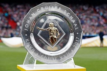

Eredivisie Schaal
1918, 1919, 1931,
1932, 1934, 1937,
1939, 1947, 1957,
1960, 1966, 1967,
1968, 1970, 1972,
1973, 1977, 1979,
1980, 1982, 1983,
1985, 1990, 1994,
1995, 1996, 1998,
2002, 2004, 2011,
2012, 2013, 2014,
2019
KNVB Beker
1917, 1943,
1960, 1967,
1970, 1971,
1972, 1979,
1983, 1986,
1987, 1993,
1998, 1999,
2002, 2006,
2007, 2010,
2019

Johan Cruijff Schaal
1917, 1943,
1960, 1967,
1970, 1971,
1972, 1979,
1983, 1986,
1987, 1993,
1998, 1999,
2002, 2006,
2007, 2010,
2019
Wereld beker
1972, 1995
Europese supercup
1972, 1973,
1995
UEFA Cup
1972, 1973,
1995
Champions League
1971, 1972,
1973, 1995